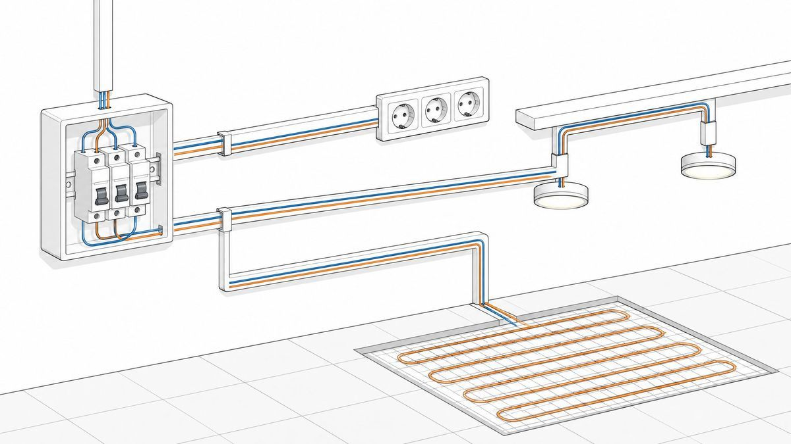

на балкон нужны три отдельные линии: розетки 3×2,5 мм² с автоматом 16 А, свет 3×1,5 мм² с автоматом 10 А и тёплый пол 3×2,5 мм² с УЗО 10 мА; розетки — IP44 для остеклённого балкона и IP55 для открытого; мат 150 Вт/м² на 3 м² даёт 450 Вт и 1,4 А; ошибка с кабелем 3×1,5 мм² под обогреватель 2 кВт — это нагрев жилы до 70 °C и оплавление изоляции.
Что можно и что нельзя на балконе
Балкон и лоджия — неотапливаемое помещение: зимой температура опускается до −5…−15 °C, на остеклении выпадает конденсат. Поэтому электрика здесь делается с поправкой на влажность и перепады: кабель с индексом нг(А)-LS, розетки IP44 и выше, УЗО 30 мА, все металлические части заземлены.
Нельзя запитываться от соседних квартир и от общедомовых сетей, ставить розетку в зоне полива растений, соединять медь с алюминием скруткой, питать обогреватель 2 кВт через бытовой удлинитель на 1,5 мм². Нельзя прятать соединения в стене: только в распаечных коробках с доступом.
Три линии и их параметры
Считать надо от нагрузки, а не от количества розеток. Розеточная линия 16 А держит 3,5 кВт, светильная 10 А — 1,5 кВт, тёплый пол до 2,5 кВт. Если на балконе планируется обогреватель 2 кВт, его лучше вынести на отдельный автомат: одновременно с тёплым полом и сушилкой линия выйдет на предел.
| Линия | Кабель | Автомат | УЗО | Максимальная нагрузка |
|---|---|---|---|---|
| Розетки | ВВГнг(А)-LS 3×2,5 мм² | 16 А, тип C | 30 мА | 3,5 кВт |
| Освещение | ВВГнг(А)-LS 3×1,5 мм² | 10 А, тип B | 30 мА (общее) | 1,5 кВт |
| Тёплый пол | ВВГнг(А)-LS 3×2,5 мм² | 16 А, тип C | 10 мА | 2,5 кВт |
| Обогреватель 2 кВт | ВВГнг(А)-LS 3×2,5 мм² | 16 А, тип C | 30 мА | 3,5 кВт |

Тёплый пол: мощность и монтаж
Мат берут из расчёта 100–160 Вт/м² полезной площади, то есть без мебели и шкафов. На 3 м² — 300–480 Вт, ток 1,4–2,2 А: для такой нагрузки хватает кабеля 3×1,5 мм², но при площади больше 6 м² и мощности свыше 1,5 кВт переходят на 3×2,5 мм². Терморегулятор ставят на сухую стену у входа, датчик — в стяжку или в слой плиточного клея.
Плёнка под плитку не подходит: клей на плёнке не схватится. Нужен мат в стяжку 30–50 мм либо тонкий мат в клей слоем 8–10 мм. Под ламинат и линолеум — только плёнка или мат с подложкой, и тогда поверхность нагрева не выше 27–28 °C.
| Площадь обогрева | Мощность мата | Ток | Кабель | Расход за 6 ч |
|---|---|---|---|---|
| 2 м² | 200–320 Вт | 0,9–1,5 А | 3×1,5 мм² | 1,2–1,9 кВт·ч |
| 3 м² | 300–480 Вт | 1,4–2,2 А | 3×1,5 мм² | 1,8–2,9 кВт·ч |
| 5 м² | 500–800 Вт | 2,3–3,6 А | 3×2,5 мм² | 3,0–4,8 кВт·ч |
| 8 м² | 800–1280 Вт | 3,6–5,8 А | 3×2,5 мм² | 4,8–7,7 кВт·ч |
Розетки: степень защиты, высота, количество
Для остеклённого балкона минимум IP44 — защита от брызг со всех направлений. Для открытого или частично открытого — IP55–IP65 с откидной крышкой. Высота: 150–300 мм над подоконником или столешницей, либо 300–900 мм от пола; от контура тёплого пола — не ниже 200 мм, чтобы кабель не грелся от мата.
Количество считают по сценариям: 2–3 розетки у рабочего места или сушилки, одна для пылесоса, одна для обогревателя. Розетку для обогревателя не ставят за шторой и над радиатором.
| Зона | Требование | Комментарий |
|---|---|---|
| Остеклённый балкон | IP44 | брызги, конденсат |
| Открытый балкон | IP55–IP65 | осадки, мойка пола |
| У зелёных растений | IP55, не ниже 300 мм от пола | полив, влажная земля |
| У обогревателя | IP44, отдельная линия | нагрузка 2 кВт и выше |
| Над тёплым полом | не ниже 200 мм | нагрев кабеля |
Свет: сколько нужно и какие светильники
По СП 52.13330.2016 для балкона достаточно 150–200 лк на полу. Для светодиодов это 10–15 Вт/м²: на лоджию 6 м² — 60–90 Вт суммарно, то есть два-три светильника по 10–15 Вт. Светильники — IP44 и выше, на металлическом каркасе обязательно с заземлением. Выключатель — внутри помещения у двери на высоте 900–1000 мм.
Точечные светильники на натяжной потолок ставят с термокольцами: без них полотно вокруг светильника провисает при нагреве выше 60 °C. Для рабочей зоны над столом добавляют линейный светильник 4000 К, для зоны отдыха — 2700–3000 К.
Прокладка кабеля и защита
Кабель идёт в кабель-канале 25×16 мм или в гофре ПВХ. По металлической обшивке — только в гофре на клипсах, без прямого контакта с металлом. Штроба в бетоне 20×20 мм, глубина не больше трети толщины плиты. Проход через стену — в гильзе, зазор запенен.
После монтажа проверяют сопротивление изоляции мегаомметром 500 В: норма не ниже 0,5 МОм. Контакты в щите протягивают через год — винты ослабляются от циклического нагрева, и место соединения начинает греться.
- Составить схему линий и посчитать нагрузку по каждой.
- Проверить, есть ли свободные модули в щите; при нехватке поставить отдельный бокс на балконе.
- Проложить трассы: розеточная на высоте 300–900 мм, светильная по потолку, пол — по полу в гофре.
- Установить подрозетники глубиной 45 мм, завести кабель с запасом 100–150 мм.
- Смонтировать мат тёплого пола, уложить датчик в гофре.
- Подключить автоматы и УЗО, подписать группы в щите.
- Проверить изоляцию мегаомметром, замерить ток утечки, опробовать УЗО кнопкой «Тест».
Цены 2026
| Позиция | Цена | Комментарий |
|---|---|---|
| Кабель ВВГнг(А)-LS 3×2,5 мм² | 95–130 руб./м | медь, нг-LS |
| Кабель ВВГнг(А)-LS 3×1,5 мм² | 60–85 руб./м | свет, мат до 1,5 кВт |
| Кабель-канал 25×16 мм | 90–150 руб./м | с крышкой |
| Розетка IP44 с крышкой | 400–1 200 руб. | с заземлением |
| Автомат 16 А | 350–900 руб. | тип C |
| УЗО 30 мА | 1 500–3 500 руб. | двухполюсное |
| Мат тёплого пола 150 Вт/м² | 1 800–3 500 руб./м² | с терморегулятором +2 000–5 000 руб. |
| Монтаж линии электриком | 250–450 руб./м | кабель-канал, крепёж |
| Установка точки (розетка, светильник) | 700–1 200 руб. | без стоимости материала |
Ошибки и последствия
| Ошибка | Последствие | Цена исправления |
|---|---|---|
| Кабель 3×1,5 мм² под обогреватель 2 кВт | нагрев жилы до 70 °C, оплавление изоляции | 4 000–8 000 руб. |
| Розетка IP20 на балконе | конденсат на контактах, короткое замыкание | 1 500–3 000 руб. |
| Нет УЗО на линии тёплого пола | риск поражения током при пробое мата | 2 000–4 000 руб. |
| Скрутка медь-алюминий | нагрев и обрыв через 1–2 года | 2 500–5 000 руб. |
| Соединение спрятано в стене | поиск и вскрытие отделки при аварии | 5 000–12 000 руб. |
| Питание от общедомовой сети | предписание УК, штраф | 10 000 руб. и больше |
Чек-лист перед штроблением
- Посчитать нагрузку каждой линии и сверить с автоматом.
- Проверить свободные модули в щите и место под УЗО.
- Выбрать кабель нг(А)-LS нужного сечения: 2,5 мм² для розеток и пола, 1,5 мм² для света.
- Купить розетки IP44 для остеклённого балкона, IP55 для открытого.
- Согласовать с УК любые работы, затрагивающие общедомовые сети.
- Заложить гофру под датчик тёплого пола до заливки стяжки.
- После монтажа проверить изоляцию мегаомметром и нажать «Тест» на УЗО.
Частые вопросы
Можно ли запитать балкон от обычной розетки в комнате?
Можно, если линия в комнате выдержит суммарную нагрузку. Розетка 16 А — это 3,5 кВт; тёплый пол 450 Вт плюс свет 90 Вт плюс обогреватель 2 кВт уже дают 2,5 кВт. Если в комнате на этой же линии работает кондиционер или стиральная машина, нужна отдельная линия от щита.
Какое УЗО ставить на тёплый пол?
10 мА для влажной зоны и 30 мА как общее противопожарное. Для мата до 1,5 кВт достаточно дифавтомата 16 А / 10 мА: он занимает два модуля и защищает и от перегрузки, и от утечки.
Нужен ли тёплый пол на балконе, если он остеклён?
Нужен, если балкон используется зимой: остекление не делает его тёплым, температура держится на 5–10 °C выше уличной. Мат 150 Вт/м² на 3 м² поднимает температуру пола до 25–27 °C и не даёт конденсату стекать по стеклу.
Сколько стоит провести электрику на балкон 6 м²?
Материалы — 12 000–20 000 руб. (кабель 25–35 м, кабель-канал, розетки, автоматы, УЗО), работы электрика — 8 000–15 000 руб. С тёплым полом на 3 м² добавьте 7 000–15 000 руб. на мат, терморегулятор и монтаж.
Можно ли ставить розетку на открытом балконе?
Можно, но только IP55–IP65 с крышкой и на стене под козырьком, куда не попадает дождь. Линия должна быть с УЗО 30 мА, а сама розетка — выше 300 мм от пола, чтобы не заливало при мытье.
Почему выбивает автомат, когда включается тёплый пол?
Три причины: мат повреждён при укладке (сопротивление ушло от паспортного), автомат подобран по номиналу ниже тока мата, или на линии висит ещё и обогреватель. Проверяют сопротивление мата мультиметром и сравнивают с паспортом — расхождение больше 10 % означает повреждение.
Источники
Материал подготовлен с опорой на следующие документы и данные:
Дисклеймер
Материалы журнала «Ремонт на примерах» носят информационный характер. Приведённые цены, сроки и нормативы являются ориентировочными: они зависят от региона, состояния объекта, уровня исполнителей и текущей рыночной ситуации, поэтому не могут служить точной сметой или гарантией результата. Перед началом работ проконсультируйтесь со специалистами и проверяйте актуальные требования нормативных документов. Редакция не несёт ответственности за решения, принятые на основании этих материалов.